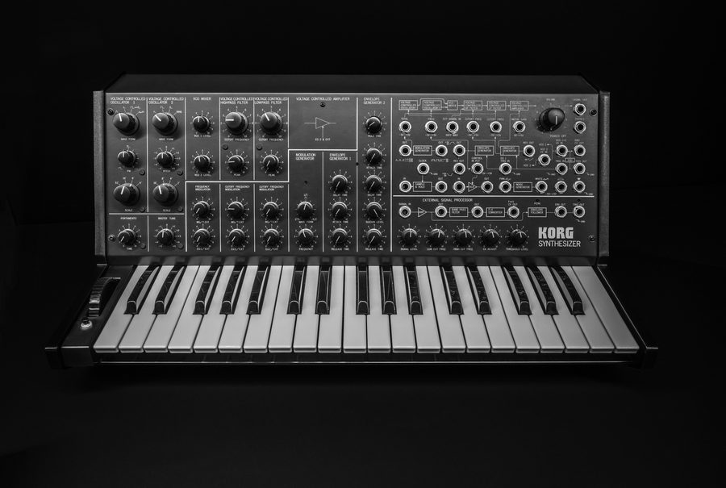

DS-10 vs the TB-303
Two machines, one idea. The Roland and the Korg both make acid — but they descend from opposite philosophies. Here's what's identical, what diverges, and how you squeeze acid out of the Korg.
hear itSame line, two filters
One acid bassline, one voice. Flip the filter between the two machines: the 303's steep 4-pole ladder vs the DS-10's gentler 2-pole Korg filter. Same notes, same cutoff — listen to how much rawer the 12 dB slope leaves things. Then plug in the LFO patch cord — modulation the 303 has no socket for.
Push resonance up on the DS-10 filter — a single 2-pole stage peaks and screams more readily than the 303's four interacting poles. That edge is the Korg sound.
the sameUnder the hood, they're twins
Both are subtractive, monophonic synths built from the exact chain you assembled in Module 2:
oscillator → resonant low-pass filter → amp, with an envelope on the filter.

Start with a harmonically rich wave, carve it with a resonant filter, and move that filter per note — that's the whole recipe for acid, and it's identical on both machines. The voice you built in lessons 05–09 already is a DS-10 synth and a 303 voice at the same time. Everything below is a difference of degree and control, not of kind.
the differencesWhere they split

| 🔶 Roland TB-303 | 🔷 Korg DS-10 (MS-style) | |
|---|---|---|
| Oscillator | 1 osc — saw or square | 2 oscillators per synth — detune them for a fatter tone |
| Filter | 4-pole diode ladder, ~24 dB/oct — smooth, liquid, tuned not to self-oscillate | 2-pole Korg filter, 12 dB/oct — rawer, buzzier, screams & self-oscillates |
| Modulation | none — no LFO. Movement = the filter envelope + your hands | an LFO (MG) plus a patch panel to cable it into pitch, cutoff or amp |
| Articulation | dedicated per-step accent + slide — the acid grammar, baked in | gate / legato + per-step volume + Kaoss X/Y automation |
| How you drive it | its own (notoriously cryptic) 16-step sequencer — program, then ride the knobs | a 16-step sequencer too, 6 tracks, but also playable live on the Kaoss pad |
| The body | one sealed silver box, 1981 | software in a Nintendo DS, 2008 — up to 8 consoles jamming |
| Core voice | identical: osc → resonant LP → amp, envelope on the filter (lessons 05–09) | |
lfo.connect(cutoff) — an oscillator summed into the cutoff AudioParam. The 303 simply
has no such wire.the recipeHow to make acid on a DS-10
The DS-10 is a general MS-style synth, not a purpose-built acid box — so you assemble the acid sound the 303 gives you for free. Reach for one synth as the bass and:
- Saw + low-pass. Pick the sawtooth oscillator, a low-pass VCF, cutoff low, resonance high — the bright-then-carve start you know from lesson 02.
- Patch the envelope to the cutoff. Cable the EG into the filter and keep the decay short — that's the per-note filter pluck of lesson 06, the moment it sounds acid.
- Legato + short gate for slides. Overlap two steps (legato gate) to get the 303's glide; the DS-10 portamentos between them — lesson 08.
- Automate the cutoff. Put the filter on the Kaoss pad's X axis and record a sweep, or draw a cutoff automation lane per step. That baked-in ride is DJ Pierre's hand, stored in the pattern.
- Compensate for the gentler filter. The 12 dB slope leaves more buzz, so lean into more resonance (and a touch of drive) to reach the squelch — or just enjoy the rawer Korg character.
Same technique, different tool. The lesson underneath: "acid" was never a machine — it's a resonant filter swept in time. The 303 made that easy by accident; the DS-10 lets you build it on purpose.
nextThe rest of the machine
You've now placed the DS-10 next to the 303 and made acid on it. But the Korg does a lot the 303 never dreamed of — two synths at once, drums built out of those synths, a full patchbay, a six-track sequencer with song mode, effects, and those eight-player jams. Let's tour what's left.
Next → The rest of the DS-10